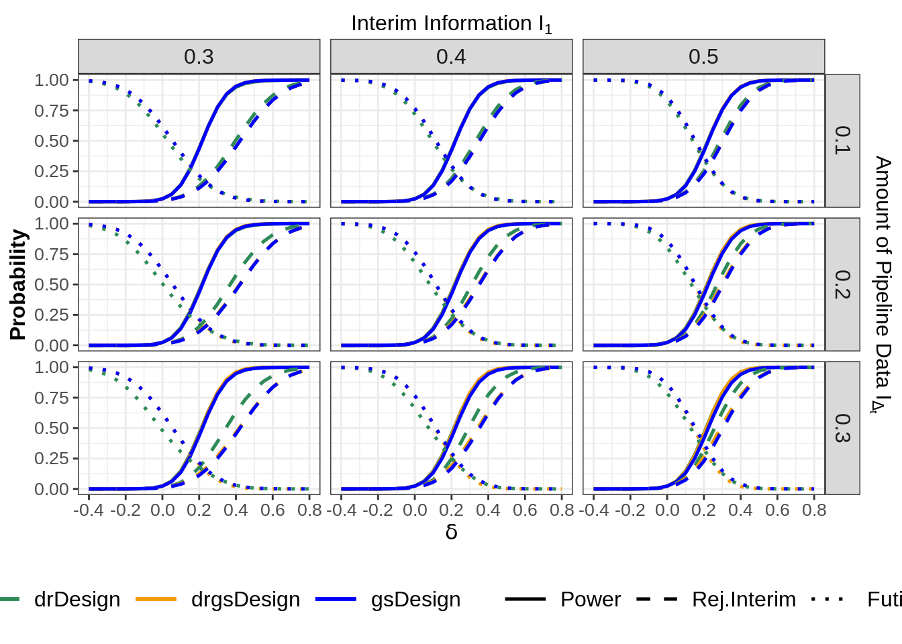
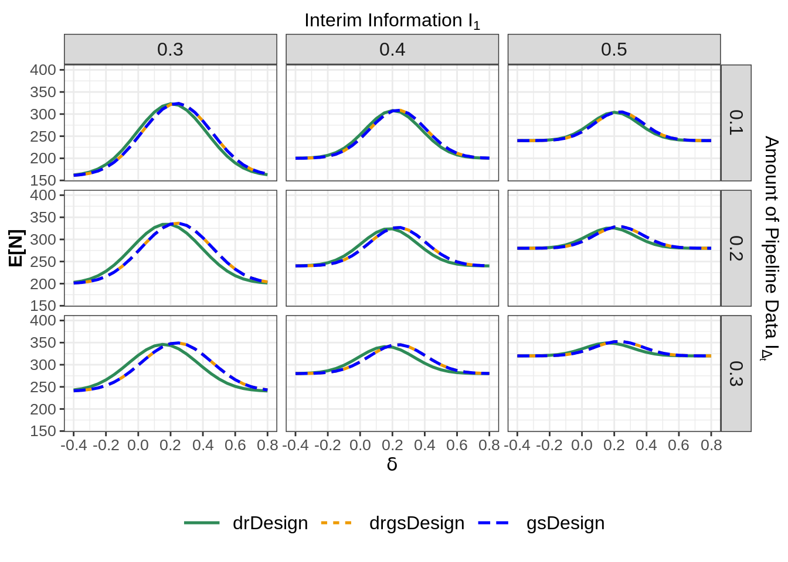

This document provides code that is used to produce the results from the manuscript “Two-stage group-sequential designs with delayed responses -- what is the point of applying corresponding methods?”. Most functionalities used to produce the results are directly taken from the R package rpact.
2 Load packages
At first, the packages rpact, ggplot2, mnormt and mvtnorm need to be installed and loaded. The package mnormt is used to evaluate probabilities of multivariate normal distributions. The package mvtnorm is used to simulate data from a multivariate normal distribution. Additionally, some own written functions are imported.
Show the code
# Main packageif (!require(rpact)) {install.packages("rpact")}# For plottingif (!require(ggplot2)) {install.packages("ggplot2")}# For multivariate normal probabilitiesif (!require(mnormt)) {install.packages("mnormt")}# For simulation of test statisticsif (!require(mvtnorm)) {install.packages("mvtnorm")}source("R/utilities.R")source("R/double_rejection_design.R")source("R/power_means_double_rejection_approach.R")
3 Initialize the different designs
At first, we illustrate how to initialize the different designs under consideration.
4 Design Characteristics
We consider a two-stage group-sequential design with \(\alpha\)- as well as \(\beta\)-spending according to Pocock-type spending functions. During the planned interim analysis at \(I_1 = 0.5\), we assume that there is still \(I_{\Delta_t} = 0.3\) of information outstanding. Different designs can be obtained by changing the inputs.
At first, we consider a standard group-sequential design with a nonbinding futility boundary. In this option, we pretend as if there were no pipeline data since those would not be used during testing. This is done by setting delayedInformation = 0 and bindingFutility = FALSE.
Sequential analysis with a maximum of 2 looks (group sequential design)
Pocock type alpha spending design and Pocock type beta spending, non-binding futility, one-sided overall significance level 2.5%, power 80%, undefined endpoint, inflation factor 1.2767.
Stage
1
2
Planned information rate
50%
100%
Efficacy boundary (z-value scale)
2.157
2.201
Stage levels (one-sided)
0.0155
0.0139
Futility boundary (z-value scale)
1.083
Cumulative alpha spent
0.0155
0.0250
Cumulative beta spent
0.1240
0.2000
Cumulative power
0.5324
0.8000
Futility probabilities under H1
0.124
4.2 Delayed response group-sequential design according to Hampson and Jennison (2013)
Secondly, we initialize the delayed response group-sequential design by Hampson and Jennison (2013). We, however, propose a slightly modified version which is such that the lower boundary is nonbinding. We initialize this design by setting delayedInformation = 0.3 and, again, bindingFutility = FALSE.
Sequential analysis with a maximum of 2 looks (delayed response group sequential design)
Pocock type alpha spending design with delayed response and Pocock type beta spending, one-sided overall significance level 2.5%, power 80%, undefined endpoint, inflation factor 1.16.
Stage
1
2
Planned information rate
50%
100%
Delayed information
30%
Upper bounds of continuation
2.157
2.201
Stage levels (one-sided)
0.0155
0.0139
Lower bounds of continuation (non-binding)
1.083
Cumulative alpha spent
0.0155
0.0250
Cumulative beta spent
0.1240
0.2000
Cumulative power
0.5299
0.8000
Futility probabilities under H1
0.147
Decision critical values
1.795
2.201
4.3 Delayed response group-sequential design with double rejection criterion
Lastly, we create a delayed response design that we call double rejection design. For details, we refer to the corresponding manuscript. The accompanying file getDoubleRejectionDesign.Rcontains the design implementation, making use of the function getGroupSequentialProbabilities().
In this section, we evaluate the performance of the different design with respect to the parameters
Probability to reject at interim
Probability to obtain futility stopping
Power
Expected sample size
We consider different effect sizes \(\delta \in [-0.4, 0.8]\) to cover effects falling under \(H_0\) and \(H_1\) as well. The overall maximum number of subjects for both arms is set to maxNumberOfSubjects <- 400 and the standard deviation is fixed at \(\sigma = 1\)
To evaluate the performance of the standard group-sequential design, we use the function getPowerMeans(design = gsDesign,...), which directly produces all required results. The expected sample size needs to be slightly adjusted as the output does not consider the additional pipeline data. More formally, the expected sample size in a delayed response design is given through \[\begin{align}
E_{DR}[N] &= (n_1 + n_{\Delta_t})P(early \, stopping) + n_{max}P(continue \,
to \, final) \\ &= n_{\Delta_t}P(early \, stopping) + n_{1}P(early \, stopping)
+ n_{max}P(continue \, to \, final) \\ &= n_{\Delta_t}P(early \, stopping) +
E[N] \\ \end{align}\] We achieve this slight adjustment by adding (delayedInformation*maxNumberOfSubjects)*performance$earlyStop to the calculated expected sample size.
5.2 Delayed response group-sequential design according to Hampson and Jennison (2013)
The evaluation of the delayed response group-sequential design is done similarly to before. No adjustments to the expected sample size need to be made as the design inherently takes the pipeline data into account. Futility at interim is observed with probability \[\begin{align} P(futility) &= P_{\delta}(Z_1 \notin
[l_1, u_1], \tilde{Z}_1 \leq \tilde{d}_1) \\ &= P_{\delta}(Z_1 > u_1,
\tilde{Z}_1 \leq \tilde{d}_1) + P_{\delta}(Z_1 < l_1, \tilde{Z}_1 \leq
\tilde{d}_1). \end{align}\]
The calculation of this probability is done in the functioncalcFutility() based on the boundaries returned by getDesignGroupSequential().
5.3 Delayed response group-sequential design with double rejection criterion
For the double rejection approach, a user-written function for the calculation of the performance criteria is available in the file getPowerMeansDoubleRejectionApproach.R. The syntax is chosen in analogy to the rpact functions. Multivariate normal probabilities are evaluated using sadmvn() from the package mnormt.
Finally, we can do the calculations from above for different designs depending on the interim information \(I_1 \in \{0.3, 0.4, 0.5\}\) and \(I_{\Delta_t} \in \{0.1, 0.2, 0.3\}\) by iterating over the different scenarios in a for-loop. Finally, we again plot the results for different settings using facet_grid(). To obtain different scenarios, only input parameters must be changed.
Show the code
# Theme for multiple plots in one gridtheme_grid <-theme_bw() +theme(legend.position ="bottom",legend.title =element_blank(),plot.title =element_text(hjust =0.5,size =13, face ="italic" ),legend.text =element_text(size =12),legend.key.size =unit(1.5, "cm"),legend.key.height =unit(1, "cm"),legend.key.width =unit(1, "cm"),strip.text =element_text(size =12),axis.text =element_text(size =10),axis.title =element_text(size =12, face ="bold") )# Design parametersinterimInformation <-c(0.3, 0.4, 0.5)alphaSpending <-c("asP", "asOF")betaSpending <-c("bsP", "bsOF")delayedInformation <-c(0.1, 0.2, 0.3)# Effect, standard deviation and sample sizealternative <-seq(-0.4, 0.8, 0.05)nAlternative <-length(alternative)stDev <-1maxNumberOfSubjects <-400# Saving all considered cases in a data.frame()cases <-expand.grid(interimInformation = interimInformation,alphaSpending = alphaSpending,betaSpending = betaSpending,delayedInformation = delayedInformation)# Input for typeOfDesign and typeBetaSpending should be character valuecases$alphaSpending <-as.character(cases$alphaSpending)cases$betaSpending <-as.character(cases$betaSpending)# Filter only cases in which alpha and beta-spending matchcases <- cases[(cases$alphaSpending =="asOF"& cases$betaSpending =="bsOF") | (cases$alphaSpending =="asP"& cases$betaSpending =="bsP"), ]# Count the number of casesnCases <-nrow(cases)# The three different methpodsmethods <-c("gsDesign", "drgsDesign", "drDesign")nMethods <-length(methods)# Placeholder for the results of a single settingresults <-data.frame(interimInformation =rep(NA, nMethods * nAlternative),delayedInformation =rep(NA, nMethods * nAlternative),alphaSpending =rep(NA, nMethods * nAlternative),betaSpending =rep(NA, nMethods * nAlternative),alternative =rep(alternative, nMethods),rejInterim =rep(NA, nAlternative * nMethods),power =rep(NA, nAlternative * nMethods),futility =rep(NA, nAlternative * nMethods),expectedSampleSize =rep(NA, nAlternative * nMethods),method =rep(methods, each = nAlternative))# List in which results for all settings will be saved as data.frame()results_all <-list()# For-loop iterating over the different considered settingsfor (i in1:nCases) {# Initialisation of gsDesign gsDesign <-getDesignGroupSequential(kMax =2,informationRates =c(cases$interimInformation[i], 1),alpha =0.025,beta =0.2,sided =1,typeOfDesign = cases$alphaSpending[i],typeBetaSpending = cases$betaSpending[i],delayedInformation =0,bindingFutility =FALSE ) index <-1:nAlternative# Performance evaluation of gsDesign performance <-getPowerMeans(design = gsDesign,groups =2,normalApproximation = T,alternative = alternative,stDev = stDev,maxNumberOfSubjects = maxNumberOfSubjects ) results$rejInterim[index] <- performance$rejectPerStage[1, ] results$power[index] <- performance$overallReject results$futility[index] <- performance$futilityStop results$expectedSampleSize[index] <- performance$expectedNumberOfSubjects + (cases$delayedInformation[i] * maxNumberOfSubjects) * performance$earlyStop# Initialisation of drgsDesign drgsDesign <-getDesignGroupSequential(kMax =2,informationRates =c(cases$interimInformation[i], 1),alpha =0.025,beta =0.2,sided =1,typeOfDesign = cases$alphaSpending[i],typeBetaSpending = cases$betaSpending[i],delayedInformation = cases$delayedInformation[i],bindingFutility =FALSE ) index <- (1+ nAlternative):(2* nAlternative)# Performance evaluation of drgsDesign performance <-getPowerMeans(design = drgsDesign,groups =2,normalApproximation = T,alternative = alternative,stDev = stDev,maxNumberOfSubjects = maxNumberOfSubjects ) results$rejInterim[index] <- performance$rejectPerStage[1, ] results$power[index] <- performance$overallReject results$expectedSampleSize[index] <- performance$expectedNumberOfSubjects informationRatesUponDelay <-c( drgsDesign$informationRates[1], drgsDesign$informationRates[1] + drgsDesign$delayedInformation[1], 1 ) results$futility[index] <-calcFutility(fut = drgsDesign$futilityBounds,crit = drgsDesign$criticalValues,dec = drgsDesign$decisionCriticalValues,alternative = alternative,stDev = stDev,maxNumberOfSubjects = maxNumberOfSubjects,informationRates = informationRatesUponDelay )# Initialisation of drDesign drDesign <-getDoubleRejectionDesign(informationRates =c(cases$interimInformation[i], 1),alpha =0.025,beta =0.2,typeOfDesign = cases$alphaSpending[i],typeBetaSpending = cases$betaSpending[i],delayedInformation = cases$delayedInformation[i] ) index <- (1+ (2* nAlternative)):(3* nAlternative)# Performance evaluation of drDesign performance <-getPowerMeansDoubleRejectionApproach(design = drDesign,alternative = alternative,stDev = stDev,maxNumberOfSubjects = maxNumberOfSubjects )# Saving everything in results results$rejInterim[index] <- performance$rejInterim results$power[index] <- performance$power results$futility[index] <- performance$futility results$expectedSampleSize[index] <- performance$expectedSampleSize# Save design characteristics as well results$interimInformation <- cases$interimInformation[i] results$delayedInformation <- cases$delayedInformation[i] results$alphaSpending <- cases$alphaSpending[i] results$betaSpending <- cases$betaSpending[i]# Saving results in the results_all list results_all[[i]] <- results# Naming of the entries in results_allnames(results_all)[i] <-paste( cases$alphaSpending[i], cases$betaSpending[i], "I1=", cases$interimInformation[i],"Id =", cases$delayedInformation[i] )}# Merge results for all settingsresults_all <-do.call(rbind, results_all)# Filter for Pocock-like spending function; Change to "asOF" for O'Brien-Fleming-like spending functionresults_all <- results_all[results_all$alphaSpending =="asP", ]# Probabilities plotpower <-ggplot(results_all, aes(x = alternative, y = power, color = method)) +geom_line(size =0.9, aes(linetype ="Power")) +geom_line(size =0.9, aes(x = alternative, y = rejInterim,group = method, linetype ="Rej.Interim" )) +geom_line(size =0.9, aes(x = alternative, y = futility,group = method, linetype ="Futility" )) +facet_grid(rows =vars(delayedInformation), cols =vars(interimInformation)) +xlab(expression(delta)) +ylab("Probability") +scale_x_continuous(limits =c(min(alternative), max(alternative)),breaks =round(seq(min(alternative), max(alternative), 0.2), 3),sec.axis =sec_axis(~.,name =expression(paste("Interim Information ", I[1])),breaks =NULL, labels =NULL ) ) +scale_y_continuous(sec.axis =sec_axis(~.,name =expression(paste("Amount of Pipeline Data ", I[Delta[t]])),breaks =NULL, labels =NULL )) +scale_color_manual(values =c("seagreen", "orange2", "blue")) +scale_linetype_manual(values =c("Power"="solid","Rej.Interim"="dashed", "Futility"="dotted" ),breaks =c("Power", "Rej.Interim", "Futility") ) + theme_grid# If the lines are overlapping, geom_path() can be used alternatively to# geom_line() to slightly shift the lines using position_dodge();# Uncomment the code below in that case.# power <- ggplot(results_all, aes(x = alternative, y = power, color = method)) +# geom_path(position = position_dodge(width = 0.02), size = 0.9, aes(linetype = "Power")) +# geom_path(position = position_dodge(width = 0.02), size = 0.9, aes(x = alternative, y = rejInterim, group = method, linetype = "Rej.Interim")) +# geom_path(position = position_dodge(width = 0.02), size = 0.9, aes(x = alternative, y = futility, group = method, linetype = "Futility")) +# facet_grid(rows = vars(delayedInformation), cols = vars(interimInformation)) +# xlab(expression(delta)) +# ylab("Probability") +# scale_x_continuous(limits = c(min(alternative), max(alternative)), breaks = round(seq(min(alternative),max(alternative),0.2),3),# sec.axis = sec_axis(~ . , name = expression(paste("Interim Information ", I[1])), breaks = NULL, labels = NULL)) +# scale_y_continuous(sec.axis = sec_axis(~ . , name = expression(paste("Amount of Pipeline Data ", I[Delta[t]])), breaks = NULL, labels = NULL)) +# scale_color_manual(values = c("seagreen", "orange2", "blue")) +# scale_linetype_manual(values = c("Power" = "solid", "Rej.Interim" = "dashed", "Futility" = "dotted"), breaks = c("Power", "Rej.Interim", "Futility")) +# theme_grid# Expected sample size ploteN <-ggplot(results_all, aes(x = alternative, y = expectedSampleSize, linetype = method, color = method)) +geom_line(size =0.9) +facet_grid(rows =vars(delayedInformation), cols =vars(interimInformation), scales ="free") +xlab(expression(delta)) +ylab("E[N]") +scale_x_continuous(limits =c(min(alternative), max(alternative)), breaks =round(seq(min(alternative), max(alternative), 0.2), 3),sec.axis =sec_axis(~., name =expression(paste("Interim Information ", I[1])), breaks =NULL, labels =NULL) ) +scale_y_continuous(sec.axis =sec_axis(~., name =expression(paste("Amount of Pipeline Data ", I[Delta[t]])), breaks =NULL, labels =NULL), limits =c(160, 400)) +scale_color_manual(values =c("seagreen", "orange2", "blue")) + theme_grid# If the lines are overlapping, geom_path() can be used alternatively to geom_line() to slightly shift the lines using position_dodge() ; Uncomment the code below in that case# eN <- ggplot(results_all, aes(x = alternative, y = expectedSampleSize, linetype = method, color = method)) +# geom_path(position = position_dodge(width = 0.02), size = 0.9) + # Using geom_path instead of geom_line for dodging# facet_grid(rows = vars(delayedInformation), cols = vars(interimInformation), scales = "free") +# xlab(expression(delta)) +# ylab("E[N]") +# scale_x_continuous(limits = c(min(alternative), max(alternative)), breaks = round(seq(min(alternative),max(alternative),0.2),3),# sec.axis = sec_axis(~ . , name = expression(paste("Interim Information ", I[1])), breaks = NULL, labels = NULL)) +# scale_y_continuous(sec.axis = sec_axis(~ . , name = expression(paste("Amount of Pipeline Data ", I[Delta[t]])), breaks = NULL, labels = NULL), limits = c(160, 400)) +# scale_color_manual(values = c("seagreen", "orange2", "blue")) +# theme_gridpower

Show the code
eN

8 Simulation of Expected Sample Size
The actual sample size as well as the power are directly dependent upon the joint distribution of the test statistics. If the statistics are known to follow a normal distribution, formulas to do calculations of location components are readily available. In our manuscript, we argue that also variance components (such as \(Var_{\delta}(N)\)) should be considered in performance evaluation. However, no straightforward formulas for the calculation of the variance of sample size and power exist. Therefore, we use simulation to obtain an empirical distribution of the random variables.
System: rpact 4.0.0, R version 4.4.1 (2024-06-14), platform: x86_64-pc-linux-gnu
To cite R in publications use:
R Core Team (2024). R: A Language and Environment for Statistical Computing. R Foundation for Statistical Computing, Vienna, Austria. https://www.R-project.org/. To cite package ‘rpact’ in publications use: